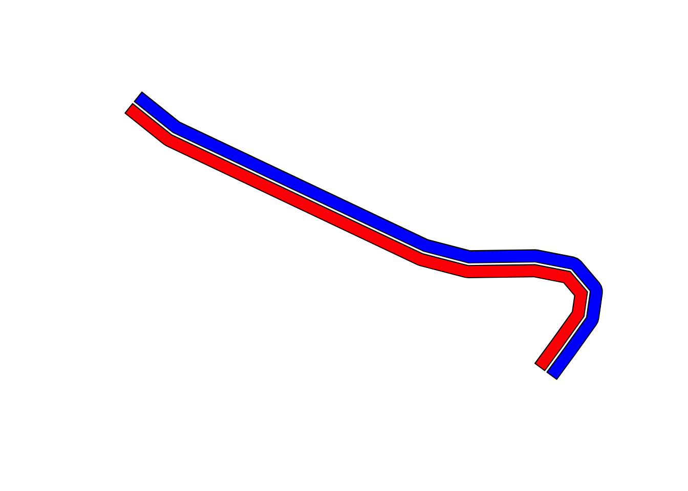

6 Stage Route Annotations
As well as reviewing the stage route, we may also want to annotate the route with additional information such as markers showing the location of split points or other points of interest.
We have already seen how we can add stage start and end markers at specific locations using custom markers, but how might we add markers to other locations?
6.1 Load in the Route Data
Let’s load in our route data to give us something to work with:
library(sf)
geojson_filename = 'montecarlo_2021.geojson'
geojson_sf = st_read(geojson_filename)## Reading layer `montecarlo_2021' from data source `/Users/tonyhirst/Documents/GitHub/visualising-rally-stages/montecarlo_2021.geojson' using driver `GeoJSON'
## Simple feature collection with 9 features and 2 fields
## geometry type: LINESTRING
## dimension: XY
## bbox: xmin: 5.243488 ymin: 43.87633 xmax: 6.951953 ymax: 44.81973
## geographic CRS: WGS 84and quickly preview a map with start and end markers:
library(leaflet)
# https://fontawesome.com/v4.7.0/icons/
start_stop_markers <- awesomeIconList(
"start" = makeAwesomeIcon(
icon = "play-circle",
markerColor = "blue",
library = "fa"
),
"stop" = makeAwesomeIcon(
icon = "stop-circle",
markerColor = "red",
library = "fa"
)
)
# TO DO - we need a better way (dplyr?) to extract this data
# for each stage
stage_coords = as.data.frame(st_coordinates(geojson_sf[1, ]$geometry))
stage_start_coords = stage_coords[1, ]
stage_end_coords = stage_coords[nrow(stage_coords), ]
first_and_last = stage_coords[c(1,nrow(stage_coords)),]
first_and_last$label=c('SS1 stage start', 'SS1 stage end')
first_and_last$typ=c('start', 'stop')
first_and_last$color=c('green', 'red')
m = leaflet(geojson_sf[1,]) %>%
addProviderTiles("OpenTopoMap", group = "OSM") %>%
addPolylines(color = "red", weight = 5) %>%
addAwesomeMarkers(~X, ~Y,
icon = ~ start_stop_markers[typ],
label = ~ label,
data=first_and_last)
mWith a base map in place, what other information might we add?
6.2 Adding Split Point Locations
One of the useful locations to mark on the stage are the split points. Split times are reported by WRC live timing, so it can be useful to see just where are on the stage they are recorded.
A live timing data feed from the WRC live timing service includes the distance into the stage of each split point, as the following JSON fragment taken from the feed demonstrates:
# https://api.wrc.com/results-api/rally-event/1695/split-times/stage-external/1701
{
"stageId": 1701,
"splitPoints": [
{
"splitPointId": 3506,
"stageId": 1701,
"number": 2,
"distance": 10.99
},
{
"splitPointId": 3509,
"stageId": 1701,
"number": 3,
"distance": 17.5
},
{
"splitPointId": 3527,
"stageId": 1701,
"number": 1,
"distance": 6.46
},
{
"splitPointId": 3543,
"stageId": 1701,
"number": 4,
"distance": 19.1
}
]
}We can grab this JSON from the original URL and parse the data out:
library(jsonlite)
library(dplyr)
stage_splits_url = 'https://api.wrc.com/results-api/rally-event/1695/split-times/stage-external/1701'
splits_json = fromJSON( stage_splits_url )
# Lets also save a local copy of that JSON data
write(toJSON(splits_json), "split_times_example.json")
splitPoints = arrange(splits_json$splitPoints, number)
# We also have access to splits_json$entrySplitPointTimes and splits_json$stageId
splitPoints## splitPointId stageId number distance
## 1 3527 1701 1 6.46
## 2 3506 1701 2 10.99
## 3 3509 1701 3 17.50
## 4 3543 1701 4 19.106.2.1 Using geojson to Find the Distance Along a Route
The turf.js is a widely used Javascript package for working with and processing geojson data. The package has been ported to other languages, including R and Python, using similar APIs.
The geoops R package provides an R port of many of the functions in the turf.js Javascript package, so let’s see how it works.
We can get the distance into stage (in km) for one of the split points from the split time JSON data:
splits_json$splitPoints[2, 'distance']## [1] 17.5# A distance of 17.5kmWe can use this distance to index along the geojson object using the geoops:geo_along() function. Specifically, geo_along() take a GeoJSON string (rather than a spatial object) and then returns the location of a point a specific distance along it, again in a GeoJSON string format:
library(geojsonio)
route_as_geojson = geojsonio::geojson_json(geojson_sf[1,]$geometry)
gj_point_along = geoops::geo_along(route_as_geojson,
17.5, units='kilometres')
gj_point_along## [1] "{\"geometry\":{\"coordinates\":[5.908658,44.816138],\"type\":\"Point\"},\"properties\":{},\"type\":\"Feature\"}"We can parse the geojson point as a simple feature using the geojsonio::geojson_sf() function and then plot the split time waypoint directly from that object:
m %>%
addCircleMarkers(data=geojson_sf(gj_point_along),
radius =10,
stroke = FALSE, fillOpacity = 0.8)6.2.2 Using rgeos::gInterpolate to Find the Distance Along a Route
The following provides a rather clunky workaround to finding the distance along the line from a Spatial object (a more streamlined approach can be found in the next chapter).
I present the recipe here as a useful (useless?!) exercise in how to come up with a recipe from basic principles when you don’t really know what you’re doing!
To begin with, let’s reuse some of the code we used in the chapter on projections that allow us to project from the degree based latlong CRS to the meters based UTM coordinate systems:
# Detect the UTM zone as an EPSG code
lonlat2UTMzone = function(lonlat) {
utm = (floor((lonlat[1] + 180) / 6) %% 60) + 1
if(lonlat[2] > 0) {
utm + 32600
} else{
utm + 32700
}
}
# Keep track of the original proj4 string
old_crs = st_crs(geojson_sf[1,])$proj4string
# Generate a new projection in the appropriate UTM zone
crs_zone = lonlat2UTMzone(c(st_coordinates(geojson_sf[1,])[1,1],
st_coordinates(geojson_sf[1,])[1,2]))
new_proj4_string = st_crs(crs_zone)$proj4string
# Transform the route to the UTM projection
utm_routes = st_transform(geojson_sf, crs=new_proj4_string)
st_crs(utm_routes)$proj4string## [1] "+proj=utm +zone=31 +datum=WGS84 +units=m +no_defs"Now that we are in a projection system based on meters, we can use the rgeos::gInterpolate() function to find a point a certain number of meters along the route. Note that the coordinates that are returned are UTM based coordinates:
# Find the distance along the route in meters
# rgeos seems to want a Spatial object?
utm_point_along = rgeos::gInterpolate(as(utm_routes[1,],'Spatial'),
12500, normalized = FALSE)
utm_point_along## class : SpatialPoints
## features : 1
## extent : 730351.2, 730351.2, 4963971, 4963971 (xmin, xmax, ymin, ymax)
## crs : +proj=utm +zone=31 +datum=WGS84 +units=m +no_defsWe now need to transform this point back to the latlong CRS:
latlon_point = st_transform(st_as_sf(utm_point_along),
st_crs(geojson_sf)$proj4string)
latlon_point## Simple feature collection with 1 feature and 0 fields
## geometry type: POINT
## dimension: XY
## bbox: xmin: 5.912144 ymin: 44.792 xmax: 5.912144 ymax: 44.792
## CRS: +proj=longlat +datum=WGS84 +no_defs
## geometry
## 1 POINT (5.912144 44.792)We can add a marker to the map showing the location of the point the required distance along the line by casting the transformed point location(s) into a dataframe and extracting the desired coordinate columns:
m = leaflet(geojson_sf[1,]) %>%
addProviderTiles("OpenTopoMap", group = "OSM") %>%
addPolylines(color = "red", weight = 5)%>%
addCircleMarkers(~X, ~Y, radius =10,
stroke = FALSE, fillOpacity = 0.9,
data= as.data.frame(st_coordinates(latlon_point)))
mFor convenience, we can cast all the split point distances into stage as actual location points and create a simple feature containing the points:
splitPoints## splitPointId stageId number distance
## 1 3527 1701 1 6.46
## 2 3506 1701 2 10.99
## 3 3509 1701 3 17.50
## 4 3543 1701 4 19.10Create a simple function to handle the creation of a point:
library(rgeos)
point_from_dist_along = function(route, dist){
st_as_sf(gInterpolate(as(route,'Spatial'),
dist, normalized = FALSE))
}
coords_from_dist_along = function(route, dist){
st_coordinates(point_from_dist_along(route, dist))
}
point_from_dist_along(utm_routes[1,], 1200)## Simple feature collection with 1 feature and 0 fields
## geometry type: POINT
## dimension: XY
## bbox: xmin: 728761.8 ymin: 4958594 xmax: 728761.8 ymax: 4958594
## CRS: +proj=utm +zone=31 +datum=WGS84 +units=m +no_defs
## geometry
## 1 POINT (728761.8 4958594)coords_from_dist_along(utm_routes[1,], 1200)## X Y
## 1 728761.8 4958594And add the point to the dataframe:
geometry = st_sfc(lapply(1:nrow(splitPoints),
function(x) st_point()))
splitPoints = arrange(splits_json$splitPoints, number)
splitPoints = st_sf(splitPoints, geometry = geometry)
splitPoints = splitPoints %>% mutate(geometry = st_geometry(point_from_dist_along(utm_routes[1,], distance)))
splitPoints## Simple feature collection with 4 features and 4 fields
## geometry type: POINT
## dimension: XY
## bbox: xmin: 729180.3 ymin: 4957663 xmax: 729185.7 ymax: 4957675
## CRS: +proj=utm +zone=31 +datum=WGS84 +units=m +no_defs
## splitPointId stageId number distance geometry
## 1 3527 1701 1 6.46 POINT (729180.3 4957663)
## 2 3506 1701 2 10.99 POINT (729182.2 4957667)
## 3 3509 1701 3 17.50 POINT (729185 4957673)
## 4 3543 1701 4 19.10 POINT (729185.7 4957675)st_coordinates(splitPoints )## X Y
## 1 729180.3 4957663
## 2 729182.2 4957667
## 3 729185.0 4957673
## 4 729185.7 4957675We could also cast all the points to a multipoint:
st_multipoint(st_coordinates(splitPoints))## MULTIPOINT ((729180.3 4957663), (729182.2 4957667), (729185 4957673), (729185.7 4957675))6.3 Parallel Routes
If we have access to multiple datasets along route, such as telemetry data sets for different cars, it may be useful to be able to plot each set on its own route line translated from the provided route.
The following example of how we might be able to achieve this is taken from One sided line buffers in R using rgeos and represents a minimal proof of concept.
library(sp)
TwoBuf <- function(line,width,minEx){
Buf0 <- gBuffer(line, width=minEx, capStyle="SQUARE")
Buf1 <- gBuffer(line, width=width, capStyle="FLAT")
return(disaggregate(gDifference(Buf1,Buf0)))
}
# Sample the first few points from a route
cc = st_coordinates(geojson_sf[1,])[1:10,]
# Create a linestring from the first few coordinates
# st_linestring expects a matrix,
# so create one with cbind on the long and lat columns
partial_route = st_linestring(cbind(x=cc[,1], y=cc[,2]))
TortBuf <- TwoBuf(line=as(partial_route,'Spatial'),
width=0.0001, minEx=0.00001)
plot(TortBuf, col=c('red', 'blue')) #First object on left, second on right
To make this approach more useful, it would probably make sense to project into UTM coordinates and set the parameters in units of meters.